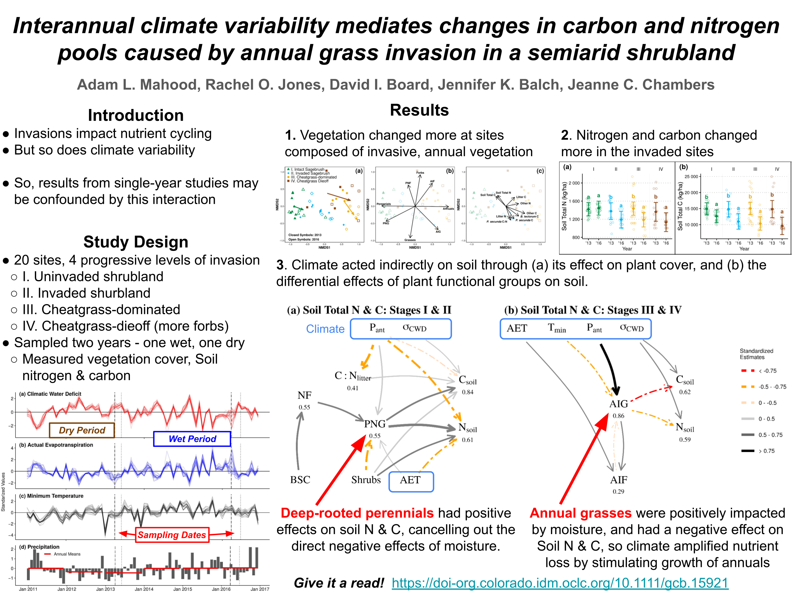

About me
I am an ecologist and a botanist who is interested in plant communities, fire ecology and exotic plant invasions.
Google Scholar
https://scholar.google.com/citations?user=d8CQ5rMAAAAJ&hl=en
Publications
2022 Mahood, A.L., Jones, R.O., Board, D.A, Balch, J.K., Chambers, J.C. Interannual climate variability mediates changes in carbon and nitrogen pools caused by annual grass invasion in a semi-arid shrubland. Global Change Biology, 28(1), 267-284. https://doi.org/10.1111/gcb.15921

2022 Balch, J.K. Abatzoglou, J.T., Joseph, M.B., Koontz, M.J., Mahood, A.L., McGlinchy, J., Cattau, M.E., Williams, A.P. Warming weakens the nighttime barrier to global fire. Accepted for publication at Nature. http://doi.org/10.1038/s41586-021-04325-1
2021 Mahood, A.L., Fleishman, E., Balch, J.K., Fogarty, F., Horning , N., Leu, M., Zillig M., Bradley, B.A. Cover-based allometric estimate of aboveground biomass of a non-native, invasive annual grass (Bromus tectorum L.) in the Great Basin, USA. Journal of Arid Environments, 193, 104582; https://doi.org/10.1016/j.jaridenv.2021.104582
2021 Fusco, E. J., .Balch, J. K,. Mahood, A. L., Nagy, R. C., Syphard, A. D., Bradley, B. A. The human-grass-fire cycle: How people and invasives co-occur to drive fire regimes. Accepted for publication at Frontiers in Ecology and the Environment.
2021 Gill, N.+, Mahood, A.L.+, Stricker E., Nagy, R.C., Muthukrishnan, R., Morrisette, J., Petri, L., Duffy, K. Meier, C. Six central questions about biological invasions that NEON data science is poised to address. Accepted for publication at Ecosphere. +equally contributing first authors
2021 Nagy, R.C., Balch, J.K.,…Mahood, A.L. Harnessing the NEON Data Revolution to Advance Open Environmental Science with a Diverse, Inclusive, and Data-Capable Community. Accepted for publication at Ecosphere.
2021 Nagy, R. C., Fusco, E. J., Balch, J. K., Finn, J. T., Mahood, A., Allen, J. M., & Bradley, B. A. (2021). A synthesis of the effects of cheatgrass invasion on US Great Basin carbon storage. Journal of Applied Ecology, 58, 327–337. https://doi.org/10.1111/1365-2664.13770
2020 Balch, J. K., St. Denis, L. A., Mahood, A. L., Mietkiewicz, N. P., Williams, T. P., McGlinchy J, and Cook, M. C. FIRED (Fire Events Delineation): An open, flexible algorithm & database of U.S. fire events derived from the MODIS burned area product (2001-19). Remote Sensing, 12(21), 3498; https://doi.org/10.3390/rs12213498

2020 Balch, J. K., Iglesias, V., Braswell, A. E., Rossi, M. W., Joseph, M. B., Mahood, A. L., … Travis, W. R. (2020). Social-Environmental Extremes: Rethinking Extraordinary Events as Outcomes of Interacting Biophysical and Social Systems. Earth’s Future, 8(7), 1–21. https://doi.org/10.1029/2019EF001319
2020 Cattau, M. E., Wessman C., Mahood, A. L., Balch, J. K. Anthropogenic and lightning-started fires are becoming larger and more frequent over a longer season length in the U.S.A. Global Ecology and Biogeography, 29, 668–681. https://doi.org/10.1111/geb.13058
2019 Mahood, A. L., & Balch, J. K. Repeated fires reduce plant diversity in low-elevation Wyoming big sagebrush ecosystems (1984 – 2014). Ecosphere, 10(2), e02591. https://doi.org/10.1002/ecs2.2591

2019 Joseph, M. B., Rossi, M. W., Mietkiewicz, N. P., Mahood, A. L., Cattau, M. E., Nagy, R. C., … Balch, J. K. Spatiotemporal prediction of wildfire size extremes with Bayesian finite sample maxima. Ecological Applications, 29(6), 1266–1281. https://doi.org/10.1002/eap.1898
2017 Balch, J. K., Bradley, B. A., Abatzoglou, J. T., Nagy, R. C., Fusco, E. J., & Mahood, A. L.. Human-started wildfires expand the fire niche across the United States. Proceedings of the National Academy of Science, 114(111), 2946-2951. https://doi.org/10.1073/pnas.1617394114